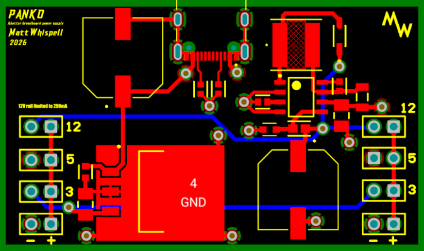
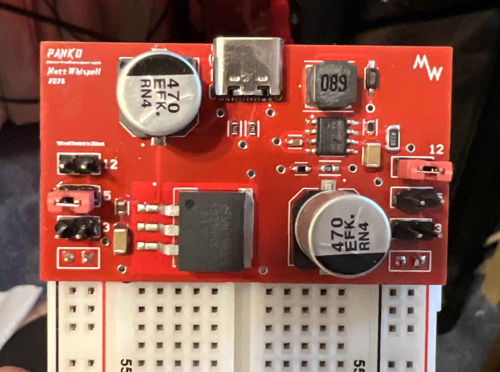

PCB Design
USB-C Breadboard Power Supply
Designed a compact power supply PCB that takes a USB-C input and lets each breadboard rail be independently set to 3.3V, 5V, or 12V.
Circuit Overview
The board takes a standard USB-C connector as its only input and generates every voltage a breadboard project typically needs. A boost converter steps the 5V USB input up to 12V, while a linear regulator drops it down to a clean 3.3V rail. Combined with the unregulated 5V straight off USB-C, that gives three available voltages on board at once.
Each of the board's breadboard-facing rails has its own jumper selector, so every rail can be independently configured to output 3.3V, 5V, or 12V depending on what a given project needs — no separate bench supply or voltage regulator breakout required.
Design Process
This project took me through the full PCB design workflow in Altium Designer, start to finish. I began by specing components — picking a boost converter IC and inductor rated for the current and ripple targets I wanted, choosing a linear regulator for the 3.3V rail, and selecting a USB-C receptacle and protection components suited to the input. From there I moved into schematic capture, wiring up the power stages and jumper-selectable rail logic, then into board layout, where I worked through component placement, copper pour, and trace routing for the power paths.
After fabrication, I hand-assembled the board, soldering both through-hole and surface-mount components, then brought it up and tested each rail under load to confirm the boost and linear regulator stages met their target voltages and the jumper selection behaved correctly across all three settings. End to end, it was a hands-on introduction to the tradeoffs involved in turning a schematic into a working, physical power supply.

